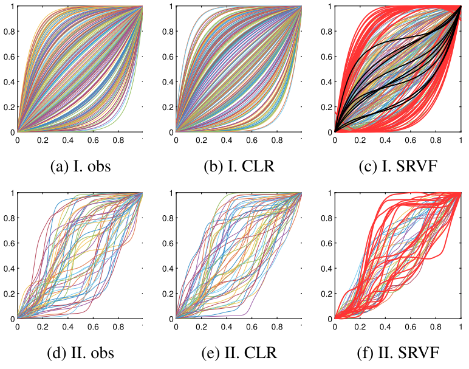
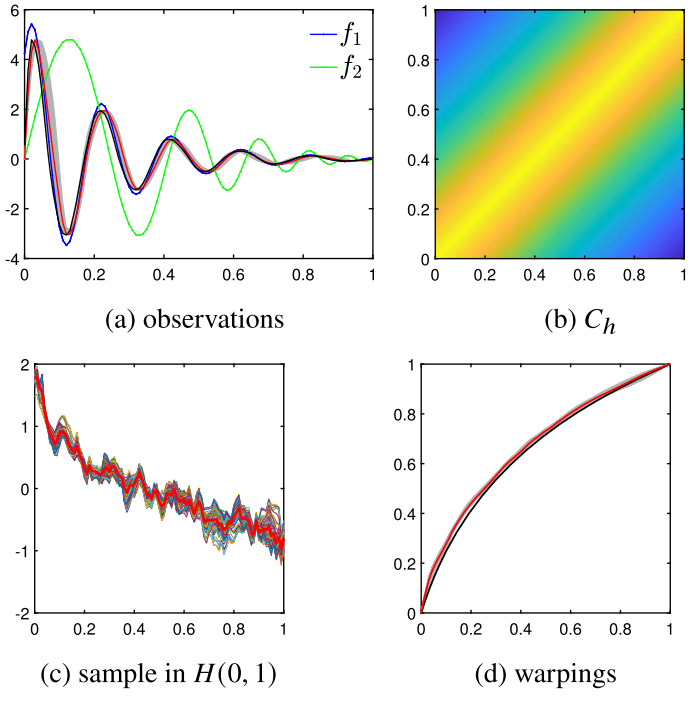
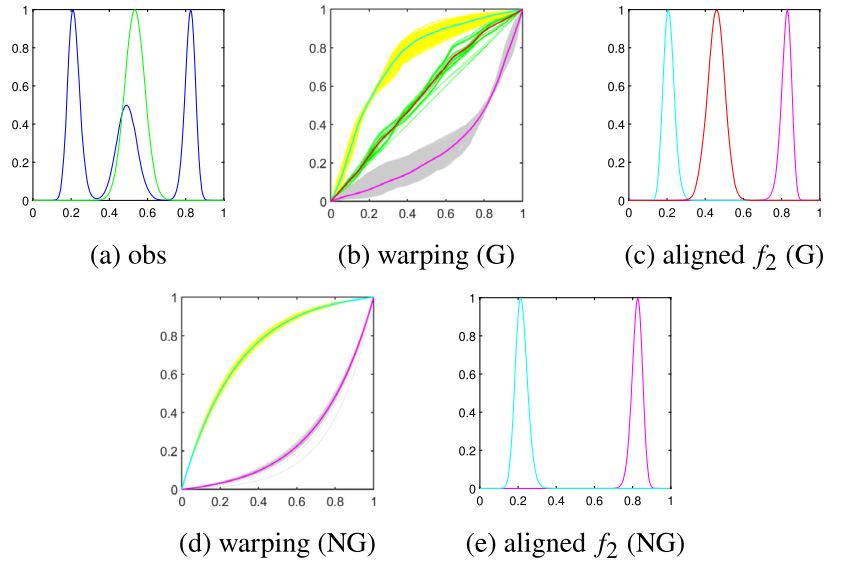
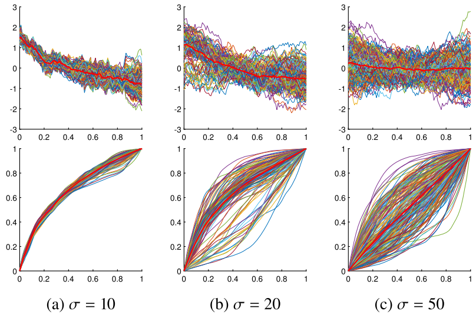
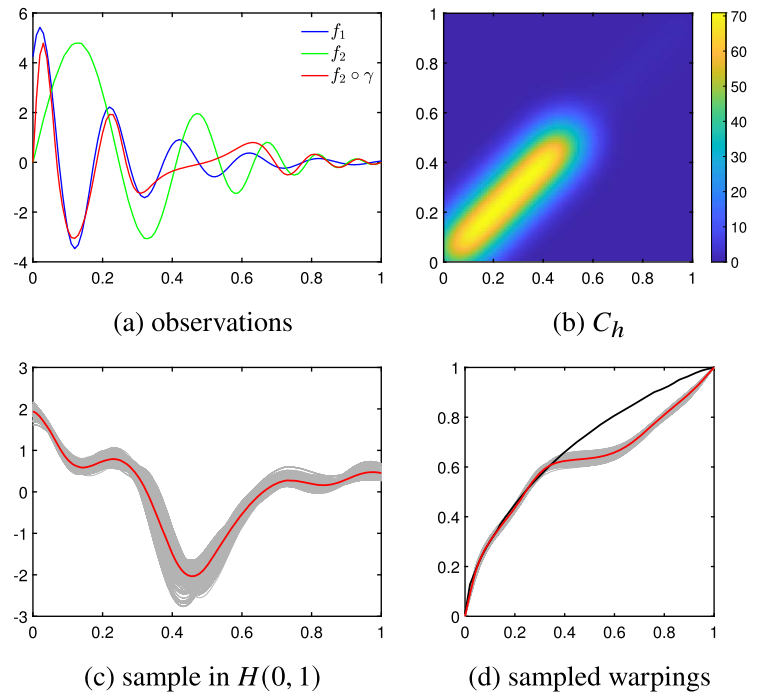
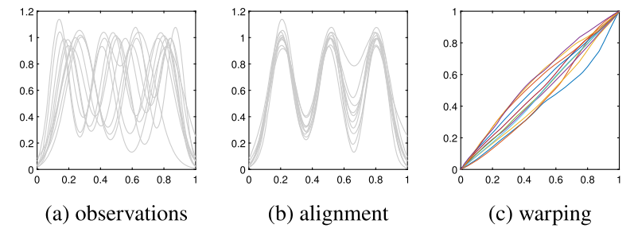

This project highlights my role as a Bayesian statistician and functional data scientist. I developed a new Bayesian framework for function registration by placing stochastic-process priors directly on a linear representation of time-warping functions. The framework avoids nonlinear approximation in the warping computation, supports Gaussian and non-Gaussian priors, and uses MCMC-based posterior inference to quantify uncertainty in function alignment.
As the first author, I led the development of the statistical framework, theoretical formulation, simulation studies, MCMC implementation, prior-sensitivity analysis, and real-data demonstration. This work reflects my expertise in Bayesian inference, functional data analysis, stochastic processes, uncertainty quantification, and statistical computing.
Developed a Bayesian registration framework that uses stochastic-process priors on CLR-transformed time-warping functions.
Implemented posterior sampling using MCMC methods, including pCN-style algorithms for efficient sampling of functional parameters.
Function registration, also called alignment, is a central problem in functional data analysis. It aims to separate amplitude variability from phase variability. Phase variability is represented through time-warping functions, which describe differences in timing or temporal progression across observed curves.
Classical methods often estimate a single optimal warping function. Bayesian registration instead treats warping as an unknown random function, allowing prior knowledge and posterior uncertainty to be incorporated into the alignment process.
The proposed Bayesian framework transforms time-warping functions into a linear representation, places stochastic-process priors in that space, and uses posterior sampling to quantify uncertainty in function alignment.
Observed functions contain both amplitude variation and phase variation, making direct comparison difficult without alignment.
Phase variability is represented by strictly increasing time-warping functions that describe timing differences across curves.
A centered log-ratio representation transforms time-warping functions into a linear L²-based space, avoiding nonlinear tangent-space approximation.
Gaussian or non-Gaussian stochastic-process priors are placed on the transformed warping functions to encode prior information.
The likelihood measures alignment discrepancy between transformed functions, while the prior controls plausible warping behavior.
MCMC algorithms generate posterior samples of warping functions, providing uncertainty quantification rather than only one optimal alignment.
The key methodological idea is to place the prior on the transformed warping function rather than on the original nonlinear warping space. This makes it possible to use standard stochastic-process models while preserving a valid one-to-one mapping back to proper time-warping functions.
The framework supports Gaussian-process priors with flexible mean and covariance structures.
The model can incorporate non-Gaussian coefficient distributions to represent multimodal or constrained prior information.
Posterior samples provide a distribution over possible alignments, not just a single optimal warping.
The paper demonstrates the Bayesian registration framework through simulations, prior-sensitivity analyses, Gaussian and non-Gaussian priors, pairwise registration, multiple-function registration, and real-data alignment. The figure cards below make the applied role of the method easier to understand.

The CLR-based representation resamples valid warping functions and avoids inappropriate non-increasing warpings that can arise from tangent-space approximation.

Posterior samples of warping functions align two curves while quantifying uncertainty around the registration result.

Non-Gaussian priors can encode structured prior knowledge and exclude undesirable alignment modes when needed.

The likelihood scale controls the balance between data-driven alignment and prior-driven warping behavior.

Covariance design allows the prior to impose different degrees of flexibility across the time domain.

The framework extends from pairwise alignment to multiple-function registration and is demonstrated on real functional data.
The proposed framework improves Bayesian function registration by replacing nonlinear approximation-based priors with a direct linear representation of time-warping functions. This enables valid prior sampling, flexible stochastic-process modeling, posterior uncertainty quantification, and more efficient alignment computation.
The CLR-based representation maps posterior samples back to proper time-warping functions.
Gaussian and non-Gaussian priors can be used to encode different prior beliefs and constraints.
pCN-style MCMC algorithms are used to sample functional warping parameters.
The method clarifies how prior scale, covariance, and mean affect registration results.
The framework extends naturally to multiple-function registration.
Programming scripts are available in the public repository accompanying the paper.
Prior modeling, posterior inference, MCMC sampling, and uncertainty quantification.
Function registration, phase variability, time warping, and multiple-function alignment.
Gaussian-process priors, non-Gaussian priors, covariance design, and KL-style expansions.
Metropolis-Hastings algorithms, pCN sampling, simulation studies, and numerical implementation.
Isometric mappings, Hilbert-space representation, identifiability, and consistency arguments.
Real-data alignment, model validation, prior sensitivity, visualization, and reproducible workflows.
Programming scripts for the paper are available at:
@article{ma2025bayesian,
title = {A new framework for Bayesian function registration},
author = {Ma, Yijia and Wu, Wei},
journal = {Electronic Journal of Statistics},
volume = {19},
pages = {2171--2198},
year = {2025}
}